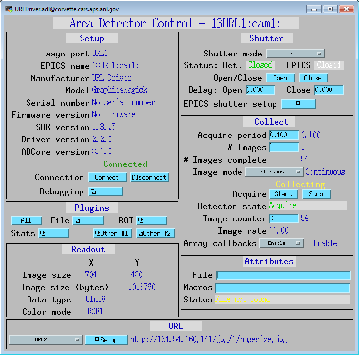

ADURL
areaDetector URL driver
- author:
Mark Rivers, University of Chicago
Introduction
This is an areaDetector driver for reading images from a URL. It can be used to read images from Web cameras, Axis video servers, or simply from a disk file. It reads the images using GraphicsMagick and can thus read images encoded in any of the formats supported by GraphicsMagick, such as JPEG, TIFF, PNG, etc.
The driver simply reads images from the specified URL at the rate determined by the AcquirePeriod. Web cameras and Axis video servers have a URL address from which the current image can be read. There are often several addresses for different image sizes.
This driver inherits from ADDriver. It implements many of the parameters in asynNDArrayDriver.h and in ADArrayDriver.h. It also implements a number of parameters that are specific to the URL driver. The URLDriver class documentation describes this class in detail.
Implementation of standard driver parameters
The following table describes how the URL driver implements some of the standard driver parameters.
Implementation of Parameters in asynNDArrayDriver.h and ADDriver.h, and EPICS Record Definitions in ADBase.template and NDFile.template |
||
|---|---|---|
Parameter index variable |
EPICS record name |
Description |
ADAcquirePeriod |
$(P)$(R)AcquirePeriod |
This controls the period between reading images. The driver attempts to collect images at the rate determined by this value. NOTE: If this value is set to 0 or too small a value can result in the driver using 100% of the CPU and becoming unresponsive to EPICS. |
URL driver specific parameters
The URL driver implements the following parameters in addition to those in asynNDArrayDriver.h and ADDriver.h.
Parameter Definitions in URLDriver.cpp and EPICS Record Definitions in URLDriver.template |
||
|---|---|---|
Description |
EPICS record name |
EPICS record type |
The name of the URL to read images from. There are 10 output records to control the URL name. |
$(P)$(R)URL[1-10], $(P)$(R)URL_RBV |
waveform, waveform |
Selects which os the 10 URLs to read from. |
$(P)$(R)URLSelect |
mbbo |
The URLs for Web cameras and video servers are typically long strings, which are difficult to remember and to type. Thus, for convenience there is an EPICS mbbo record ($(P)$(R)URLSelect) which is used to select 1 of 10 URLs. This allows easily switching between cameras, etc. The mbbo menu string fields (e.g. ZRST, ONST, etc.) can be edited to supply a useful short description of each camera (e.g. “Sample camera”), and the corresponding URL waveform record will store the actual URL. Both are in save/restore. Note that when the mbbo menu string fields are edited then one will need to close the main URLDriver.adl medm screen and reopen it to see the new menu choices. This is due to restrictions in medm and Channel Access.
Unsupported standard driver parameters
The URL driver does not support many of the standard driver parameters because it does not provide control of image acquisition. Thus AcquireTime, binning, region to read out, trigger modes, etc. are not supported.
Configuration
The URL driver is created with the URLDriverConfig command, either from C/C++ or from the EPICS IOC shell.
int URLDriverConfig(const char *portName,
int maxBuffers, size_t maxMemory,
int priority, int stackSize)
For details on the meaning of the parameters to this function refer to the detailed documentation on the URLDirverConfig function in the URLDriver.cpp documentation and in the documentation for the constructor for the URLDriver class.
Example st.cmd startup file
There is an example IOC boot directory and startup script provided with areaDetector: Example st.cmd Startup File.
MEDM screens
The following show the MEDM screens that are used to control the URL driver. Note that the general purpose screen ADBase.adl can be used, but it exposes many controls that are not applicable to the URL driver, and lacks some fields that are important for the URL driver.
URLDriver.adl
URLDriver.adl is the main screen used to control the URL driver.
URLDriverSetup.adl
URLDriverSetup.adl is the screen used to configure the mbbo menu choices and the URL strings for up to 10 preset URLs. Note that when a new value is entered into any of the URL string waveform records that URL will be immediately displayed, even if it is not the URL currently selected in the mbbo menu.
ImageJ Viewer of URL driver with Axis video server
The following is an ImageJ viewer window looking at the URL driver connected to analog camera through an Axis video server.